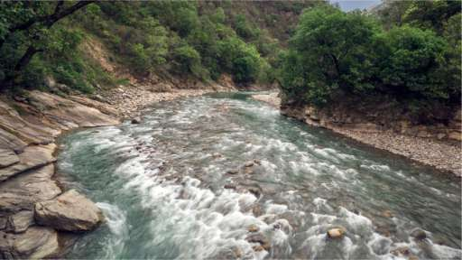

Rivers
 |
 |
Some are considered as gods and goddesses and revered, while others are the lifelines of the settlements around them. Such is the prominence of rivers in India that the country itself has been named after the Indus river the finds mention in Indian epics. Also, referred to as the Indus Valley civilisation, the northern part of India flourished near the river. Rivers in India are not just natural wonders but also the abode of holiness and the Sapta Sindhu or the seven sacred rivers are the most prominent, including the Ganga, Yamuna, Saraswati, Godavari, Krishna, Brahmaputra and Narmada.
Spurting from the majestic Gangotri Glacier in the Western Himalayas, the holiest of holies, River Ganga (Ganges) is among the largest rivers in the country. Bhagirathi, as it is called in Uttarakhand from where it originates, streams till Devprayag, and merges with Alaknanda to form the Ganga river. Where this mighty river meets with River Yamuna, the second holiest river of India originating from the Yamunotri Glacier, the sangam or confluence at Prayagraj, is a much-worshipped point where devotees take a dip into the waters with a belief that it would absolve them of their sins. The sangam presents a spectacular sight when the holy and grand Ganga arti (a fire ritual) is held there, with hundreds of earthen lamps floating in the river. Prayagraj is also the site of the renowned Kumbh Mela, which is easily the largest congregation in the world. Ganga drains into the Sundarbans delta in the Bay of Bengal, creating the largest river delta in the world, with River Brahmaputra.The fickle and ferocious Brahmaputra finds its source in the Himalayas in Tibet. Encompassing the state of Assam, the river is home to many beautiful islands like Majuli, one of the largest riverine islands, that owe their rich diversity and fertile landscape to its generous bounty. Cruising along this river is an experience not easily forgotten. Travel along the lit Guwahati city, to the dense and swampy expanse of Kaziranga National Park and world heritage sites, and drink in the beautiful sights during this water safari. Moreover, the fascinating wildlife and bird species finding shelter in the lush forests around the river, make for a thrilling wildlife sighting. The river also skirts various ancient ruins, Hindu temples, colonial palaces etc.
The second largest river in the country, Godavari, originating from Trimbak, is also counted among the seven sacred rivers of the country. This spot has been consecrated by the famous Trimbakeshwar Temple, dedicated to Lord Shiva. The delta of the Godavari is covered by Coringa mangrove forests, which are the second largest mangrove forest in India. The fertile basin of River Godavari and Krishna, the fourth longest river, is the nesting site of the rare Olive Ridley turtles.
Streaming into the striking Shivasamudram Falls, the second biggest waterfall in India, River Cauvery or Kaveri, originates from the Brahmagiri Hill in the Western Ghat. Traversing the states of Tamil Nadu and Karnataka, the river falls into the Bay of Bengal.
With its rippling silver waters, River Pamba looks like a stream flowing from paradise's pools. Its banks are dotted with religious landmarks, while the river itself is a veritable signature of Kerala's tradition and culture. Birthing from the Pulachimalai Hill in the Western Ghats, Pamba empties into the beautiful and pristine Vembanad Lake, which is famous for its luxurious houseboats cruises. Gushing through various medicinal plants and herbs, the river absorbs a multitude of curative properties, thereby earning its reputation for washing away one's sins. The much-revered Sabarimala Temple, nestled amid luxuriant green forests and grasslands also lies on the sandy banks of the river.
Originating from the Aravalli range in Rajasthan, the Saraswati river, a tributary of Alaknanda river, submerges in the Rann of Kutch. It passes through areas of Patan and Sidhpur. Ensconced in the Amarkantak Hill, in eastern Madhya Pradesh, River Narmada originates from Narmada Kund, a small tank. Flowing into the Arabian Sea, the river is famous for the Narmada parikrama (circumambulation), which involves travelling by foot from one bank to the river to the other. The whole process takes about two to three years.